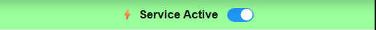
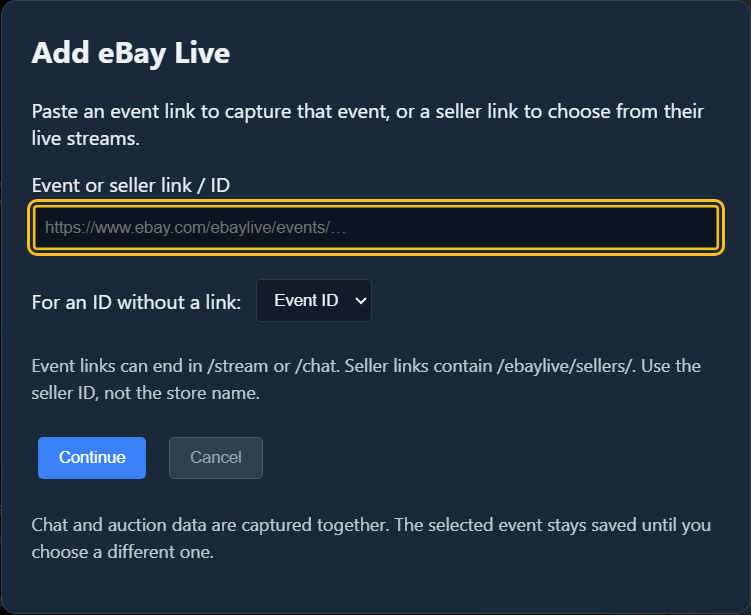
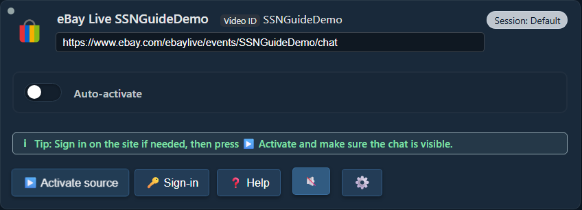
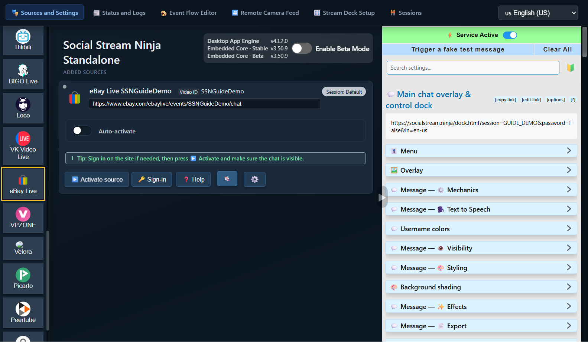
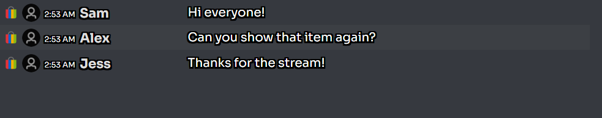
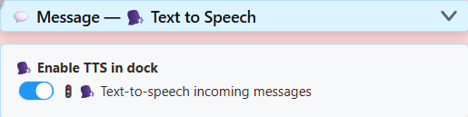
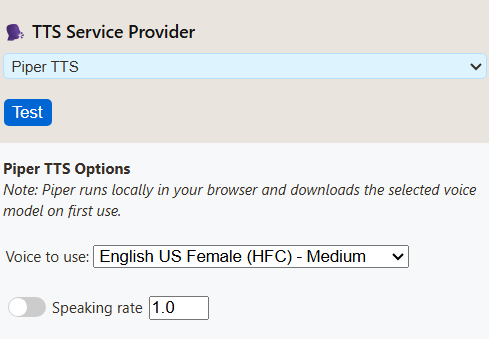
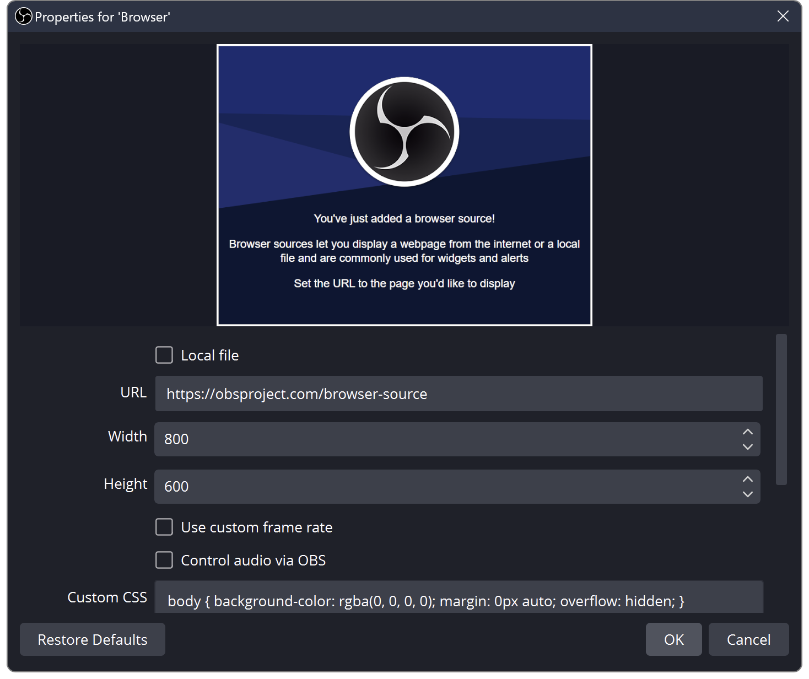

Allikas = vestlus, mille jäädvustate. Dokk = SSN-i aken, mis näitab neid sõnumeid. OBS = kuhu te need oma voogu panite.
Valige SSN-i käitamiseks üks viis. Te ei vaja mõlemat.
1. Avage SSN ja lülitage see sisse
Laadige alla töölauarakendus arvuti jaoks installige see ja seejärel avage Social Stream Ninja.
Mine aadressile Allikad ja sätted. Kui parem paneel ütleb Teenus keelatud, klõpsake seda üks kord. Peaks ütlema Teenus aktiivne.
Installige Social Stream Ninja Chrome’i veebipoest Chrome'is või Edge'is.
Klõpsake oma brauseris Laiendused (pusle-tükk) nuppu, siis Social Stream Ninja. Kinnitage see järgmiseks korraks.
Kui hüpikaken ütleb Laiendus keelatud, klõpsake seda üks kord. Peaks ütlema Laiendus aktiivne.


Kas töölauarakendus ei avane?
Järgige Windowsi, macOS-i või Linuxi avamisjuhiseid. SSN-i installimine ei ühenda automaatselt vestlust.
2. Lisage vestlus, mida soovite lugeda
sisse Allikad ja sätted, valige vasakpoolsetest nuppudest oma platvorm. Vajadusel kerige seda loendit.
eBay Live näide: klõpsa eBay Live, kleepige oma otsesündmuse link ja seejärel klõpsake Jätka.


Teie uus allikas kuvatakse all Lisatud allikad. Klõpsake Aktiveeri allikas. Kui sait palub teil sisse logida, kasutage Logi sisse, seejärel aktiveerige allikas uuesti.


Kus need kontrollid on?


Aastal sama brauser, millel on laiend, avage otseülekande vestlusleht. Vajadusel logige platvormile sisse ja hoidke see vahekaart avatuna.
eBay Live näide: avage oma otsesündmus eBays ja veenduge, et selle vestlus oleks nähtav. Tooteloendi või müüja poe leht ei ole otsevestlus.
Selle meetodi jaoks ei lisa te SSN-i lähterida: laiendus jäädvustab teie avatud toetatud vestluslehed.
Kontrollige: näete uusi sõnumeid, mis ilmuvad algse platvormi vestluslehel.
Kas kasutate mõnda muud platvormi?
Kasutage selle platvormi otsevestluse või hüpikvestluse linki. Otsige üles oma platvormi seadistamise sammud.
3. Avage SSN-dokk
Naaske SSN-i seadetesse rakendusest paremalklõpsates selle brauseri laienduse ikoonil. Otsi Peamine vestluse ülekate ja juhtdokk.
Klõpsake selle pealkirja all olevat pikka linki. See avab teie vestlusdoki. Kasutage kopeeri link kui peate selle mujale kleepima.

Paluge kellelgi saata uus vestlussõnum või saatke see ise algplatvormil. See peaks ilmuma SSN-dokis.


Kas vestlus ilmub siia? Olete ühendatud. Enne TTS-i või OBS-i sätete muutmist pange see tööle.
Minu dokk on tühi
Kontrollige, kas SSN on aktiivne, allikas töötab ja selle vestlus on nähtav. Saada a uus sõnum; vanu sõnumeid ei saa uuesti esitada. Avage doki link samast SSN-i rakendusest/laiendist, mitte ekraanipildist või muust seansist.
Vajadusel kasutage Käivitage võltsitud testsõnum SSN-i seadetes. Kui see ilmub, kuid tegelik vestlus mitte, uurige allikat. Kui kumbagi ei kuvata, kontrollige doki linki ja ühendust.
4. Valikuline: lugege vestlust ette
Jah, TTS saab sissetulevaid vestlusi automaatselt lugeda, üks sõnum korraga. eBay ei vaja oma TTS-funktsiooni. SSN peab juba teksti vastu võtma.
Laiendage tagasi SSN-i seadetes oma peamise doki lingi all Sõnum: Tekst kõneks. Lülitage sisse Luba TTS dokis:


Kerige selles jaotises alla. Vali Piper TTS all TTS teenusepakkuja, seejärel valige hääl. API-võtit ega tasulist kontot pole vaja.


Kopeerige oma peamise doki link uuesti. Uuendatud link sisaldab TTS-i. Vanem kopeeritud link ei saa uusi sätteid.
Ma tahan seda ainult oma arvutis kuulda
Avage värskendatud doki link ja saatke uus vestlussõnum. Klõpsake lehe sees, kui teie brauser blokeerib heli. Siin saate peatuda, kui te ei vaja OBS-i.
5. Lisage dokk OBS-i
- Otsige oma OBS-stseenist üles Allikad. Klõpsake + → Brauser. Nimetage see SSN Chat, seejärel klõpsake OK.
- Asenda vaikeseade URL äsja kopeeritud dokilingiga. Lahku Kohalik fail märkimata.
- TTS-i jaoks kontrollige Heli juhtimine OBS-i kaudu. Klõpsake OK.


Liigutamiseks lohistage vestluskasti OBS-i eelvaates. Selle suuruse muutmiseks lohistage nurka. Kui olete selle allika juba lisanud, avage see Omadused ja asendage selle asemel vana URL.
Ma tahan häält ilma vestlust näitamata
Hoidke brauseri allikas lubatud, kuid asetage see läbipaistmatu kaamera/mänguallika taha või teisaldage see lõuendilt. Ärge lülitage selle silmaikooni välja ega laadige seda helile tuginedes välja.
Kuidas on lood OBS-i kohandatud brauseri dokiga?
See on teie jaoks mõeldud juhtpaneel. See erineb stseenist Brauseri allikas eespool. TTS-heli salvestamiseks alustage brauseri allikaga. Lisateave dokkide ja ülekatete kohta.
6. Enne otseülekande alustamist kontrollige heli
- Saatke teine vestlussõnum. Otsige liikumist edasi SSN Chat OBS-is Heli mikser.
- Et seda ise kuulda, avage Redigeerimine → Täpsemad heliomadused. Seadistage see allikas Monitor ja väljund.
- Tehke lühike OBS-salvestis ja esitage see. Peaksite seda sõnumit üks kord kuulma.
Vestlus nähtav + hääl salvestusel = valmis. Teie otsesaade peab kasutama OBS-i heli, et vaatajad seda kuuleksid; SSN ei lisa automaatselt heli eraldi telefoniülekandele.
Vaikne või kaks korda kuulmine?
Arvesti liikumist pole: kontrollige uut URL-i, TTS-lülitit, hääle allalaadimist ja juhtige heli OBS-i kaudu. Alustage Piperist, mitte System TTS-ist OBS-is.
Mõõdik liigub, kuid salvestus vaikib: kontrollige vaigistamise ja salvestusraja ülesandeid.
Kaks korda kuuldes: sulgege lisakõne dokk/brauser või keelake selle TTS. Vältige nii OBS-i allika kui ka selle jälgitava heli teise koopia salvestamist.
Võrrelge hääli ja tehke TTS-i tõrkeotsing · OBS-i allika abi · OBS-i heliabi
Järgmine kord, kui voogesitate
Avage SSN, aktiveerige oma allikas (või avage vestluse vahekaart) ja avage OBS. Kui eBay annab järgmisele voogule uue sündmuse lingi, värskendage selle sündmuse allikat. Jätkake sama SSN-i seansi dokilingi kasutamist.
Täpsemad valikud
Muud kõneteenuse pakkujad · Käivitage oma TTS-server · Kõik juhendid